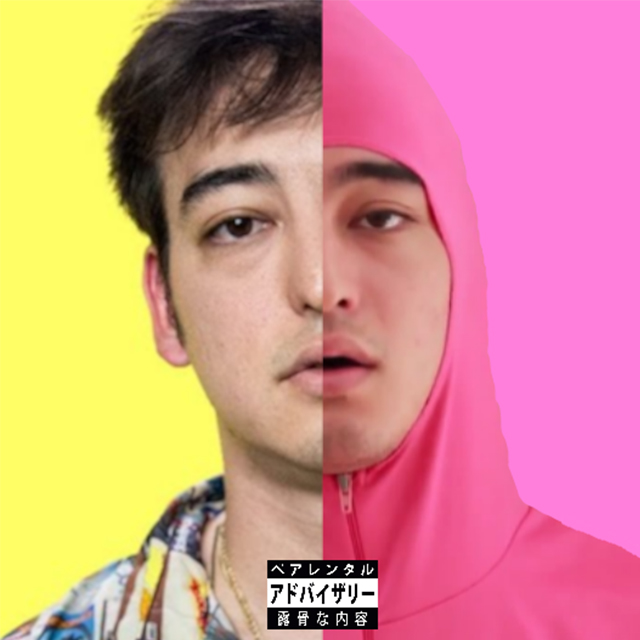

George Kusunoki Miller
Youtuber as Papa Franku / Pink Guy
Musician as JoJi

Youtuber as Papa Franku / Pink Guy
Musician as JoJi
Joji was born on 18 September 1992, in Osaka
He is half Japanese and half Australian.
At age 18, he left Japan and traveled to the United States.
JoJi has three youtube channels, that consisted of rap songs, rants, extreme challenges, ukulele performances and a bizarre show titled The Filthy Frank Show, with most of the main characters played by Joji.
In February 2013 he made a video with the title Harlem Shake. This video is widespread and eventually become viral on the internet
In December 2017, Joji retired his youtube channel to focus on his music career, under the name Joji
Extended Play (EP)
On 3 November 2017, Joji Released an Extended Play In Tongues.
It EP labeled with 88Rising and Empire.
It has 8 Joji's Songs and 8 Remixed Songs
Album
Ballads 1 released on 26 October 2018.
It EP labeled with 88Rising and 12Tone.

Single
On 14 June 2019, Joji released a single "Sanctuary"
This Single released with Official Video in Youtube
Single
On 6 February 2020, Joji released a single "Run"
This single is the newest single from joji
This Single released with Official Video in Youtube
Beside he make his own Album, EP, and Singles, Joji also collabs in 88Rising.
Joji was featured in the song "Where Does the Time Go?" with Rich Brian
Not only that JoJi also has a Compilation album with other 88Rising Member
He gives an example to show how easy it is in the social media to gain traction/followings by simply sharing Frontal opinions and joking about topics that really offensive.There is no denying that offensiveness is the whole social media machine and the social media is a reflection of the human.